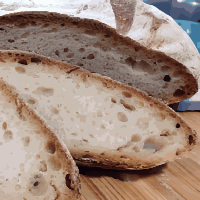
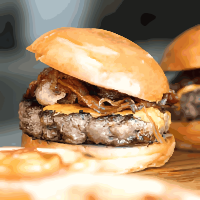
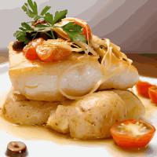
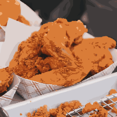
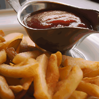

Tabouleh

Organic blend of locally-grown greens and quinoa, making the perfect way to indulge without guilt.

We start our day at the crack of dawn to bake our own muffins, bread, and dinner rolls. Loaves not used that day are donated to the local food shelter.

People come from all over to enjoy our lovingly made burgers. We grind our own locally-sourced organic beef and turkey so you know it's fresh and free from fillers and other nonsense. Go for one of our creative topping combos or stick with the classics.

Our chef works with local fisherman to pick the freshest fish the sea has to offer for our daily seafood special. Our Roast Cod Caponata with Roasted Potatoes is an old favorite with our regulars.

Our fresh, homemade fried chicken is crispy on the outside, tender and juicy on the inside. Coated in a flavorful, chef's secret seasoned batter, it's fried to golden perfection for a satisfying, delicious meal.

A nice American classic of homemade French fries.
Organic blend of locally-grown greens and quinoa, making the perfect way to indulge without guilt.